Public Sessions
-
Open Dialogue: The difference that makes a difference
by Rajiv Singh
Moderated by Kavita Arora
4 March, 2020
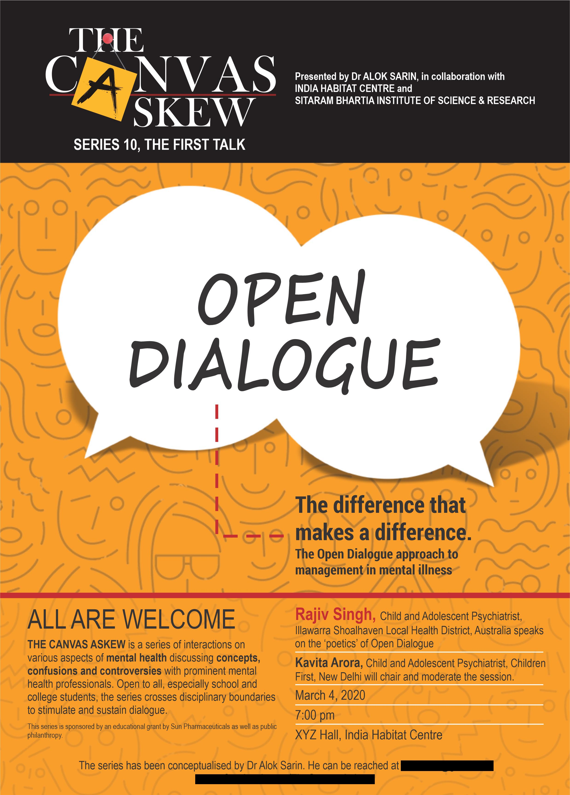 -
The Elephant Vanishes
by Sushrut Jadhav
20 October, 2019
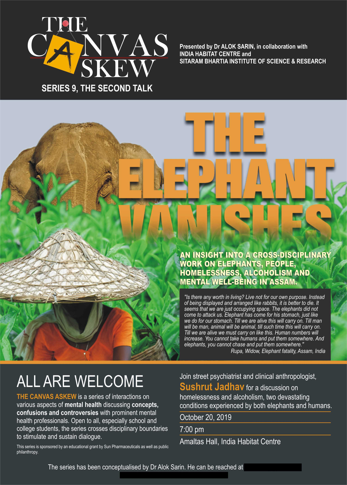 -
East vs West: Through the Eyes of a Social Psychiatrist
by Swaran Preet Singh
Moderated by Sanjeev Jain
18 September, 2019
-
The Unsafe Asylum: Stories of Partition and Madness
by Anirudh Kala
Moderated by Urvashi Butalia
17 August, 2018
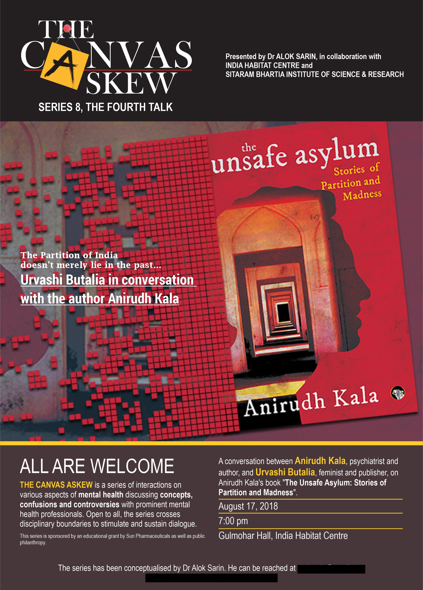 -
The Psychological Impact of the Partition of India
by Sanjeev Jain, Alok Sarin
Moderated by Ritu Menon
15 June, 2018
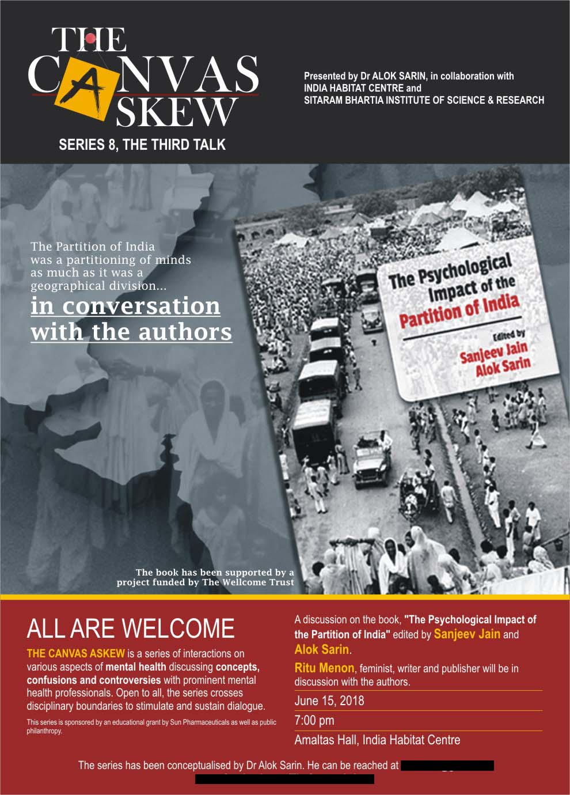 -
Stories of Troubled Times: The Mental Hospital in Delhi and the Great Indian Mutiny
by Alok Sarin, Sanjeev Jain
Moderated by Narayani Gupta
11 May, 2018
-
if i had to tell it again: A Memoir
by Gayathri Prabhhu
Moderated by Amit Sen
27 April, 2018
-
Gender Dysphoria: The Questions
by Ambarish Sarvik, Pramada Menon, Anup Dhar, Sanjeev Jain
Moderated by Alok Sarin
7 April, 2017
-
The Madhouse in the City: The Relevance of the Mental Hospital
by Sanjeev Jain, Pratima Murthy, Anup Dhar
Moderated by Alok Sarin
20 May, 2016
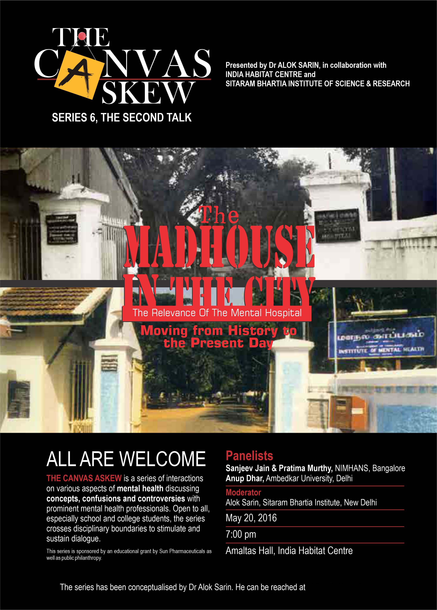 -
An Anecdotal Personal History of Depression
by Ramachandra Guha
11 March, 2016
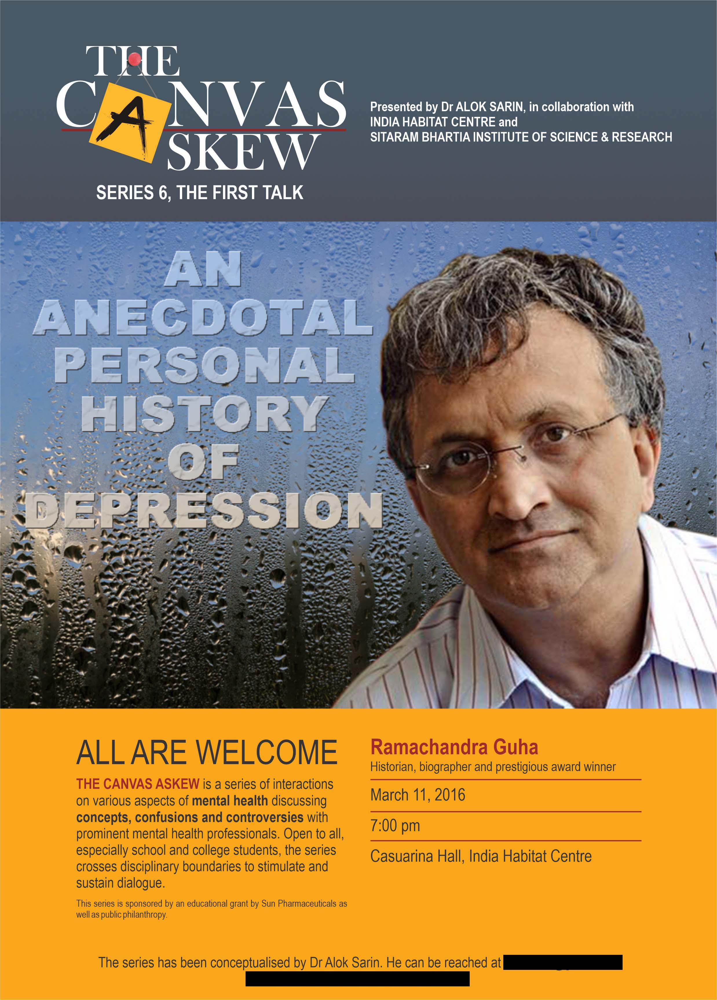 -
Alchemy of Empathy: Transforming Stress into Meaning at Work
by Eve Ekman
10 December, 2015
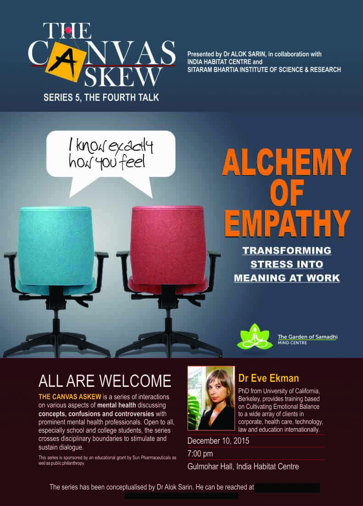 -
Texting Times: The Story of Behavioural Addictions
by Pratima Murthy
18 September, 2015
-
Loud Whispers: Does Teen Mental Health Get the Attention it Deserves?
by Meghna Gulati, Nandita Singh
Moderated by Kavita Arora
31 July, 2015
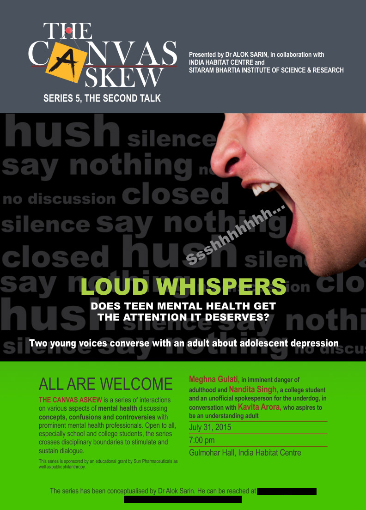 -
Psychiatry: Where Are We and Where Do We Go from Here?
by Ajai Singh
24 April, 2015
-
Inspiring Faith: The Story of Vishwas — A documentary on rehabilitation of mental illness in a half way home
by Prakash Jacob, Pankaj Pachauri, S. Kalyanasundaram, Kiran Rao, Alok Sarin
12 October, 2014
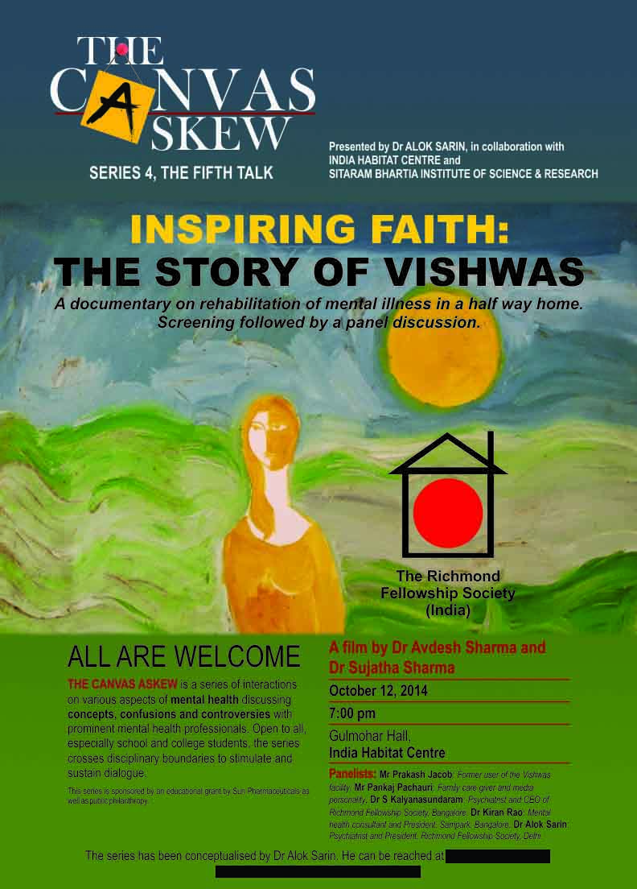 -
An Hour WIth the Mahatma
by Alok Bajpai
25 July, 2014
-
Mental Ill Health, Poverty and Homelessness: The Banyan Experience
by Vandana Gopikumar
Moderated by Keshav Desiraju
25 April, 2014
-
Why Children Do Not Learn
by Jai Ranjan Ram
Moderated by Komal Sood
21 February, 2014

-
From Prohibition to Happy Hour: The social and political history of alcohol in India
by Vivek Benegal
24 January, 2014
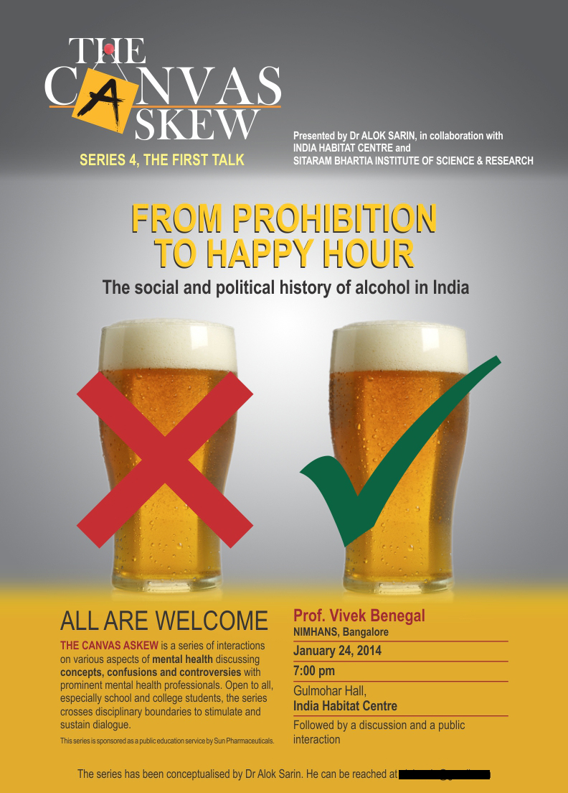 -
Come With Me: the premiere of the film by Kolkata-based NGO Anjali
by Ratnaboli Ray, Urvashi Butalia, Shobna Sonpar, Alok Sarin
9 December, 2013
-
On Living Wills and the Ulysses Clause: The use of advance directives in the practice of psychiatry
by Alok Sarin
20 September, 2013
On Living Wills and the Ulysses Clause: The use of advance directives in the practice of psychiatry" width="567px" > -
Why We Need to Talk about the Partition of India
by Sukeshi Kamra
Moderated by Urvashi Butalia
23 August, 2013
-
Of Good Intentions and Doctored Omelettes: Discussion on the use of covert medication in psychiatric practice
26 July, 2013
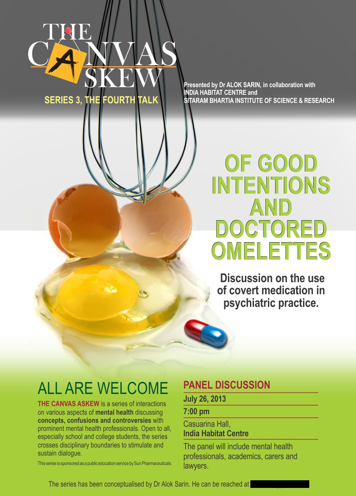 -
Why this Kolaveri Di about Psyschiatric Treatment? Does it Work, or is it All in Your Mind?
by Prathap Tharyan
7 September, 2012
-
You're Not Perfect Either: Rights of babies with disabilities to be born
by Jo McGowan Chopra
Moderated by Dunu Roy
19 November, 2010
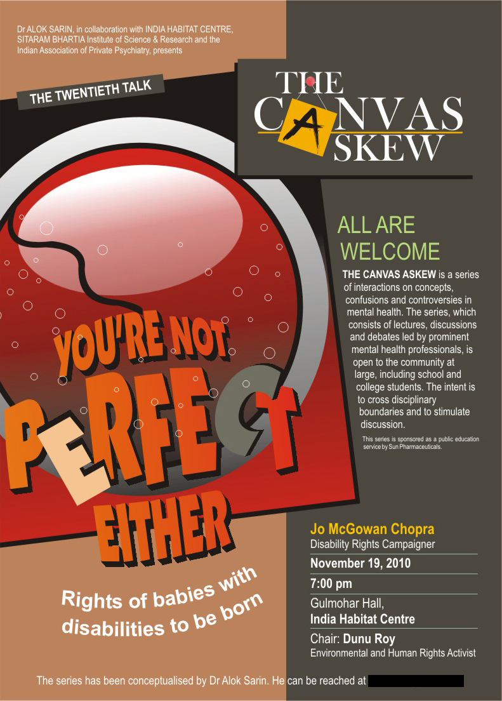 -
Surviving Success
by Vihang Vahia
Moderated by Mukul Kesavan
15 October, 2010
-
Twenty-First Century Parenting
by Harish Shetty
Moderated by Santosh Desai
20 August, 2010
-
Rainbow Coalition: Living with bipolar disorder
by Akhileshwar Sahay
Moderated by Sudhir Khandelwal
17 September, 2010
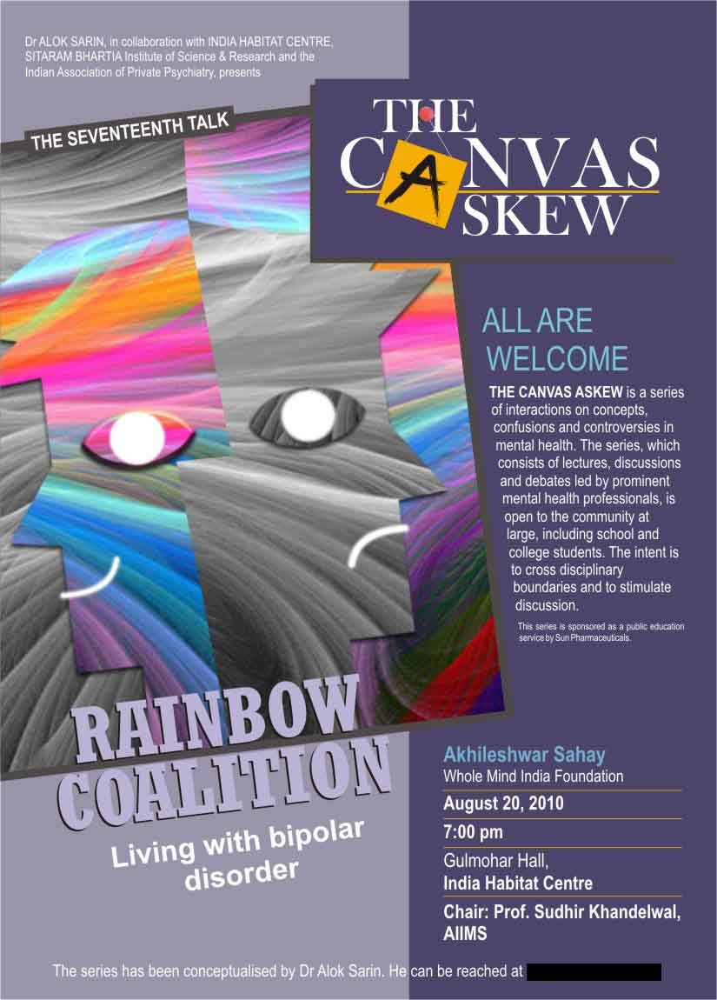 -
Clouds Over the Morning Sky: A talk on childhood depression
by Kavita Arora
Moderated by Abha Adams
23 July, 2010
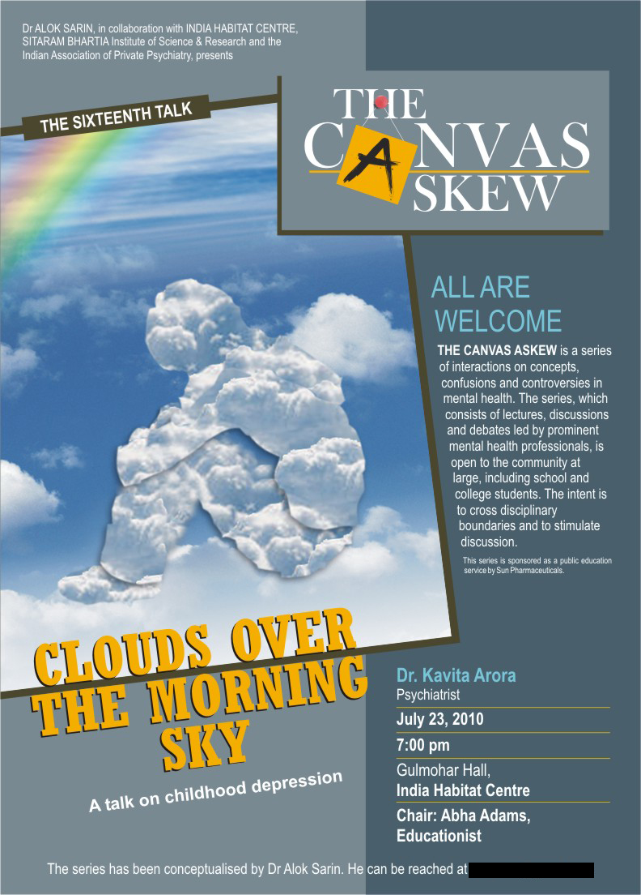 -
Therapy: The Talking Cure
by Ashok Nagpal, Vatsala Subramaniam, Reena Nath, Jasmeet Kaur, Shelja Sen
Moderated by Anurag Mishra
28 May, 2010
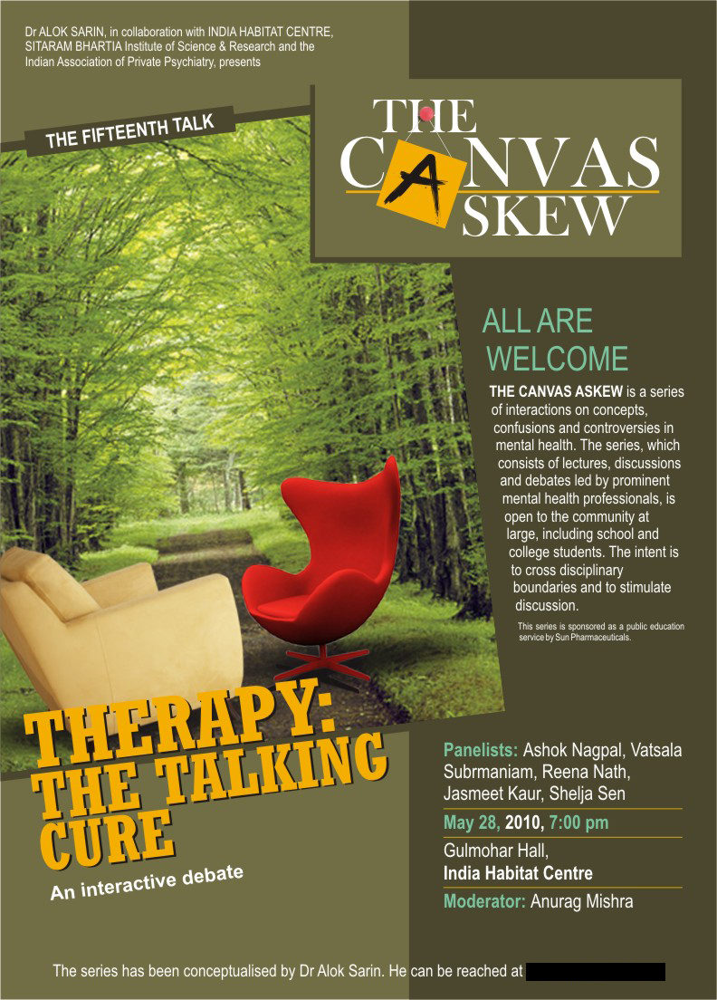 -
Awakenings from Bedlam: Towards Progressive Mental Health Legislation
by Soumitra Pathare, Anirudh Kala, Achal Bhagat, Rajesh Nagpal
Moderated by Alok Sarin
30 April, 2010
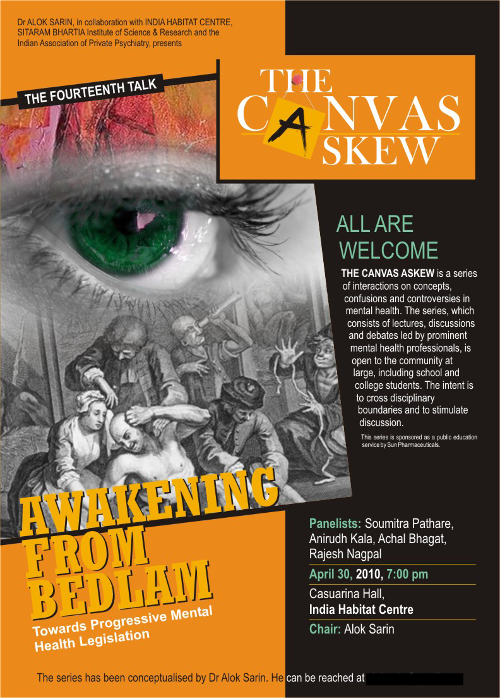 -
Why Not Us? A Discussion on the Rights of Persons Living with Mental Illness
by Achal Bhagat
Moderated by Bhargavi Davar
24 March, 2010
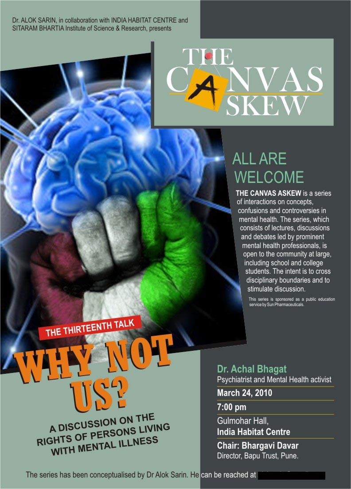 -
Scientology: What Does it Say about Psychiatry and Psychology?
by W. Vaughn McCall
24 January, 2010
-
The World is Grey: The Problems of Ageing
by Mathew Varghese
Moderated by Sanjeev Saith
18 December, 2009
-
Habits of Happiness: Cultivating Altruism
by Matthieu Ricard
Moderated by Ravij Mehrotra
5 November, 2009
-
Surviving Schizophrenia
by P.S.V.N. Sharma
Moderated by Pankaj Pachauri
25 September, 2009
-
The Slaughter of Innocence: How Academics is Ruining Adolescence
by Aniruddha Deb
Moderated by Kabir Mustafi
30 August, 2009
-
Do prevention strategies for suicide work?
by Mohan Isaac
Moderated by Kavita Arora
17 July, 2009
-
The Canvas in the Mirror: portrayal of psychiatric disorders in the arts
Moderated by Anirudh Kala
19 June, 2009
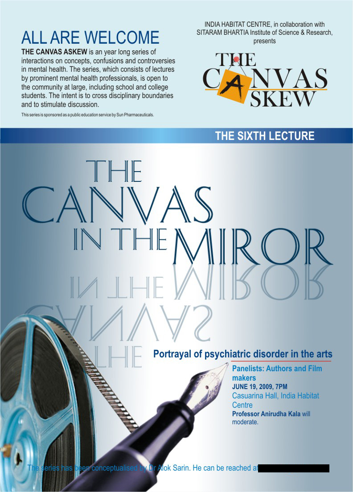 -
Rhythm 'n' Blues: The Cadence of Bipolar Disorder
by Sanjeev Jain
Moderated by Sadhana Vohra
22 May, 2009

-
Attention Deficit Hyperactivity Disorder: Finding Answers
by Shelja Sen and Amit Sen
Moderated by Abha Adams
17 April, 2009
-
Fear is the Key: A Closer Look at Anxiety
by Ajit Bhide
Moderated by Rajiv Mehrotra
21 March 2009
-
Education in Times of Terror
by Shekhar Seshadri
Moderated by Arun Kapur
20 February, 2009
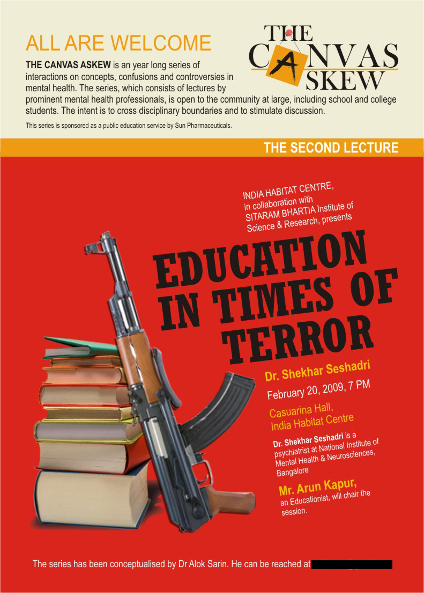 -
Inaugural Lecture
by Alok Sarin
23 January, 2009